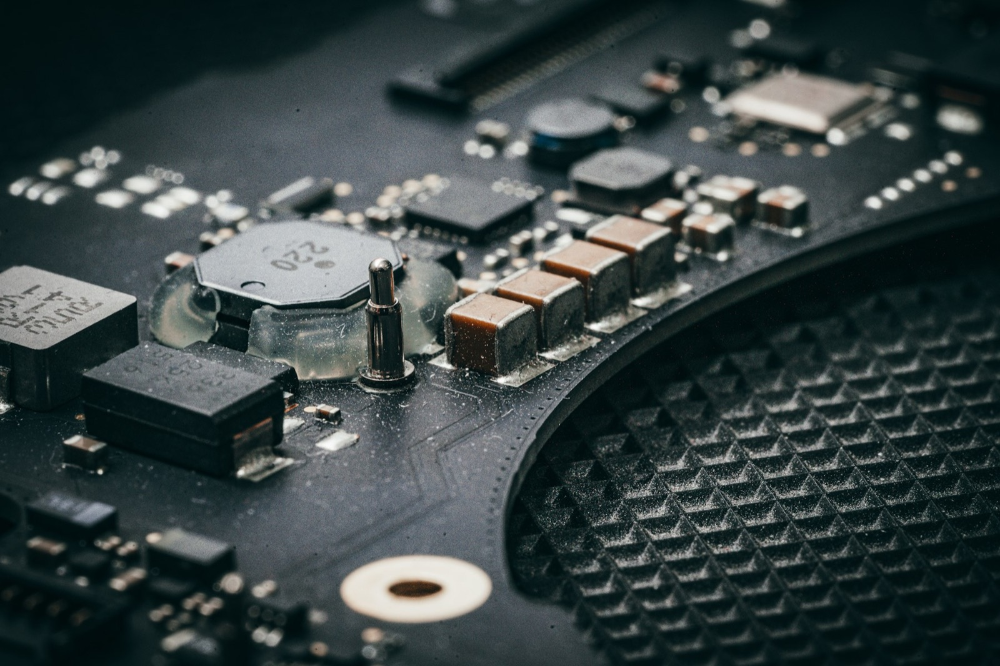

Como trabalhamos.
Um processo simples, do chamado ao suporte contínuo.

- 1
Conversa
O que aconteceVocê conta o que está acontecendo com o computador ou com a rede, pelo WhatsApp, Direct ou formulário.
- 2
Diagnóstico
O que aconteceAvaliamos o equipamento e a rede para achar a causa real do problema.
- 3
Execução
O que aconteceManutenção preventiva e corretiva, formatação, limpeza, troca de peças, otimização do sistema, instalação e configuração de rede.
- 4
Acompanhamento
O que aconteceSuporte contínuo, monitoramento preventivo e assistência personalizada para você e sua empresa.
Dúvidas comuns.
O que a AtomTuring faz?
Manutenção preventiva e corretiva, formatação, limpeza, troca de peças e otimização do sistema de computadores. Instalação e configuração de rede cabeada, otimização de sinal Wi-Fi e suporte técnico. E acompanhamento contínuo.
Quem paga as peças?
Nós fazemos a troca. O custo da peça fica por conta da empresa.
Atendem empresas?
Sim. O suporte é pensado para você e sua empresa.
Quanto custa e quanto tempo leva?
Depende do serviço. Valores e prazos são combinados no orçamento, que é sem compromisso.
Como peço um orçamento?
Pelo WhatsApp (11) 94549-8733, pelo Direct do Instagram @Atomturing, por e-mail ou pelo formulário da página de orçamento.
Vamos deixar tudo funcionando?
Atalho: W WhatsApp · O orçamento